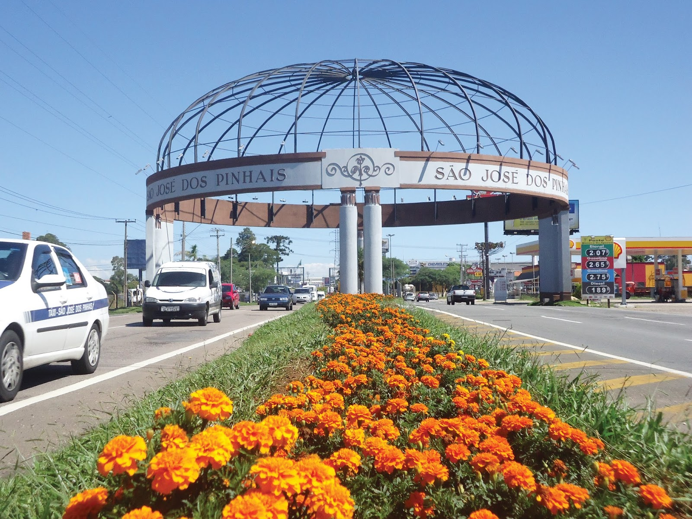

Bem-vindo ao GRIOT- São José dos Pinhais
Tu, mais forte e mais bela serás GRIOT!
São José dos Pinhais reúne uma rica diversidade histórica e cultural, construída pela contribuição de diferentes povos ao longo de sua formação. A presença da população negra faz parte dessa trajetória, deixando marcas na cultura, no trabalho e na vida social do município. Valorizar essa memória é fortalecer o reconhecimento da diversidade e preservar histórias que compõem a identidade são-joseense.

Conteúdos que valorizam a Cultura Negra
Acesse a cultura afro-brasileira são-joseense.

Músicas
Textos
×